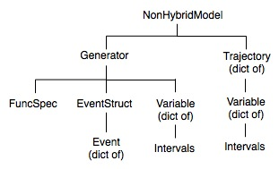
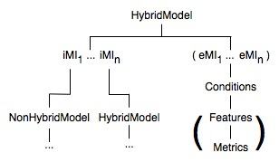

Contents
On this page we describe the use of the HybridModel class to represent hybrid dynamical systems, that is, dynamical systems with smooth flows that are punctuated by discrete events (optionally undergoing discrete mappings of state at these events). The vector fields either side of an event may have different dimensions. Other uses for the Model class are found on the basic Model page. A summary of the Model aggregation hierarchy (containment of other classes) is shown in the following figures:
|  |  |
iMI (eMI) means internal (external, respectively) Model Interface, while the subscripts indicate that there can be one or more of each. Parentheses indicate optional attributes. For instance, the Feature and Metric classes are used optionally in external MIs, which are used optionally for global consistency control during hybrid trajectory calculations.
While other simulation environments provide an "if..then" statement or similar to support discontinuities in a vector field, we reserve that statement for use in discrete-time systems and then only for simple conditions. A more flexible and powerful way to specify discontinuities is given here, involving the ModelInterface classes, although there is some greater overhead involved in setting up the syntax. Through higher level specifications we hope to simplify this syntax in the future. One example of this is given by the import utility for NineML model specifications of neural models (see the tutorial page).
The focus of PyDSTool is on applications in the continuous domain, both in time and state. As a result, the approach taken to hybrid systems differs from that in many discrete event-based simulators such as SimPy. We effectively treat the continuous parts of trajectories more fundamentally than the discrete events that may switch between different vector fields or map system states instantaneously. PyDSTool is not an efficient general-purpose discrete event simulator (both in terms of computation and specification) if the main focus of the model's application is not continuous trajectories such as those defined by ODEs.
There are three essential elements to a hybrid system model in PyDSTool: Generators, events, and transition rules between the Generators that are applied on occurrence of the events. The specification of an initial state condition must uniquely determine which Generator should be used to begin determining a trajectory. This is done by evaluation of the associated events for the system at the initial condition. A terminal event may occur that stops the trajectory generation. At this point the transition rules for the stopped Generator are consulted, and a new Generator is chosen by applying those rules to the final state condition. The final state may also be mapped to a new value before becoming the initial condition for the next Generator.
When used as a complete model in its own right, all references to time in a Generator object are to the absolute ("global") time. However, when embedded in a Model object as a hybrid system, the concept of absolute and relative ("local") time may become distinct for certain purposes. A Generator object has an attribute globalt0 for use by a Model object for these purposes. The primary reason that a Generator object is set up this way is when it is re-used as a trajectory segment as part of a hybrid model.
A Generator trajectory may represent a stereotypical behaviour that is repeated often in the dynamics of a hybrid model. Rather than re-computing the same trajectory for different absolute time intervals, an independently existing trajectory whose time domain is stated in local time is more easily re-used. To commit a copy of such a Generator to a particular absolute time interval in a hybrid model, the globalt0 is merely set appropriately. The Model class makes the handling of absolute time transparent to the end-user, and knows how to adjust queries in absolute time to the relative time of an appropriate consituent trajectory segment.
The built-in auxiliary function globalindepvar provides access to a hybrid system's absolute ("global") value of the independent variable (usually time) from within an individual Generator. More information about this function is provided on the page UserDocumentation.
1) In defining the events and transition rules of a hybrid system it is possible to specify to PyDSTool a Generator that can be entered with an initial state that violates one or more of the Generator's terminal event conditions. These conditions are (currently) not checked at initialization, and so trajectory determination will continue, possibly leading to errors.
2) Don't try to create hybrid ODE models using "if...then" statements. The integrators can fail when their right-hand side functions change discontinuously, as their internal error detection diagnostics are not designed for such changes. This is particularly likely if vector field for one of the variables suddenly changes direction as a result of the discontinuity.
A model instance holds information that determines which Generator is used to calculate a trajectory segment, given the initial state. When a terminal event occurs during the calculation, the model uses a rule to determine which Generator to use next.
Hybrid trajectories are stored inside the Model object they are associated with. Hybrid trajectories can be accessed much the same way as regular trajectory objects when treated as continuous curves. However, hybrid trajectories can also be treated as discrete mappings, from one "terminal event" to the next. To access a hybrid trajectory this way, we call the Model instance that contains it with the additional option 'asmap=True': my_model(<trajname>, <integer>, asmap=True), where the integer represents the number of the partitions to access. These integers may range from 0 to the number of partitions minus one. The number of partitions can be found by calling my_model.numPartitions(<trajname>).
In a Model object, alongside the hybrid trajectory is information about the event parameters used during its calculation. In fact, there is an object containing various types of information about the trajectory, referenced as my_model.trajectories[<traj_name>]. The event parameters are stored in a copy of the EventStruct object associated with each Generator used to create the hybrid trajectory in a dictionary attribute 'genEventStructs', accessed in the following way: my_model.trajectories[<traj_name>].genEventStructs[<gen_name>].
See Models.
The approach taken in PyDSTool is that when a hybrid system is declared in which there is more than one vector field (i.e. more than one Generator), the hybrid solver must be able to automatically determine the correct Generator to use at the initial time for a given initial condition (IC). There need to be a set of self-consistent conditions placed on the initial state in order for the hybrid solver to determine which Generator to use at the starting time -- the user cannot explicitly name the initial Generator.
Primarily, these conditions come from evaluating the terminal events associated with each Generator at the initial condition provided. The Model class will only evaluate the terminal events that have been set active (which is their default state if the user has not specified). The reason the user is not allowed to suggest an initial Generator is twofold. Firstly, the user might not specify a Generator that is consistent with the way the terminal events partition the state space. Therefore, regardless of how the initial Generator is determined, this consistency check ought to be made. Secondly, if this consistency check remains incomplete because the initial Generator choice is under-specified, then we are at the mercy of human input to initiate hybrid solving. How will the hybrid solver know what to do if it is running unsupervised, and the initial condition is generated automatically by an algorithm that doesn't know about the hybrid system definition that will be using that IC? Forcing the setup of the hybrid system to be logically self-consistent without the arbitrary input of a user to set the initial Generator guarantees some safety in running the hybrid solver unsupervised.
How does this problem arise in practice? For one thing, directionless threshold-crossing events (dircode=0) do not partition the state space in a way that helps to determine in which sub-domain an initial condition lies. Additionally, even for a set of events that all have a fixed direction of threshold crossing, the set still may not uniquely determine a sub-domain. This may happen for several reasons: (1) because it is natural to place ICs right on an event surface for some Generator "G", leaving the eligibility of "G" indeterminate; (2) because it is most efficient to specify only sufficient conditions for termination of a trajectory computation with the current vector field: an exhaustive set of necessary and sufficient termination conditions would be required to guarantee that an IC is uniquely placed in a sub-domain of the state space; (3) even if all those conditions were listed, some terminal events are set to occur not when a function of the system state passes a threshold, but when a certain amount of time has elapsed.
If the initial Generator is under-specified then you will get an error saying that the system has found too many eligible Generators to begin computing a solution. If case (1) holds then the only chance for the system to determine the correct initial Generator is if all the other Generators can be eliminated for the IC. This can never happen if there are non-state events (i.e. when case (3) holds). Artificially introduced "indicator" variables are a "trick" solution to this problem that avoids forcing terminal events to be specified in an unnatural way. A possible alternative when case (3) does not hold is to perturb the initial conditions slightly so that initial state is truly inside the event boundaries.
Indicator variables are artificial state variables (usually integers, e.g. 0 and 1) that you force to lie in a singular domain (i.e. the singleton set containing that integer), so that you get additional domain constraints without adding terminal events to your system. This information usually represents something about the system's recent history, in terms of prior terminal events. Note that although adding these variables artificially means that they are ancillary to the main variables, you should not make these critical indicator variables "auxiliary" variables (either explicitly using the auxvars initialization key or by omission from a vars initialization key), otherwise the values will not be tested and updated properly. However, the Model formalism has a secondary way to mark certain variables as ancillary: the forceIntVars(<var_list>) method labels variables as "internal", while the remaining variables are "external", i.e. externally observable. This will have more significance when performing Model estimation (described later).
In order to use an indicator variable, simply set its value as part of the initial conditions: only the Generators for which that value corresponds to the singular domain set for that Generator will match, thereby providing you sufficient conditions for determining a unique initial Generator.
In PyDSTool/tests/IF_model_test.py, an integrate-and-fire neuron model with a square-pulse spike is implemented as a hybrid system with two sub-systems: 'leak' and 'spike'. A spike threshold event occurs when the variable V increases through a value of -60. The sub-threshold 'leak' ODE system is then replaced by the 'spike' explicit function system that terminates after a set duration given by the parameter 'splen'. This terminal event specification means that an initial condition cannot be placed uniquely in one of the two sub-systems. The excited variable has been introduced to record the most recent history of whether spike threshold was passed.
Here is an excerpt of the specification for this model:
leak_args = args(name='leak')
leak_args.pars = {'I': 1.3, 'gl': 0.1, 'vl': -67}
leak_args.xdomain = {'V': [-100,50], 'excited': 0}
leak_args.varspecs = {'V': "I - gl*(V-vl)",
'excited': "0"}
leak_args.algparams = {'init_step': 0.02}
leak_args.events = leak_thresh_ev
leak_args.abseps = 1.e-7
DS_leak = Generator.Vode_ODEsystem(leak_args)
spike_args = args(name='spike')
spike_args.tdomain = [0.0, 1.5]
spike_args.varspecs = {'V': "if(t<splen,50,-95)", 'excited': "1"}
spike_args.pars = {'splen': 0.75}
spike_args.xdomain = {'V': [-97, 51], 'excited': 1}
DS_spike = Generator.ExplicitFnGen(spike_args)
Here, the excited variable is set to exist in the singleton domain {0} for the leak phase, and {1} for the spike phase. The initial condition icdict = {'V': -80., 'excited': 0} will only satisfy the domain test for the excited variable in the leak phase.
An example of case (2) occurs in PyDSTool/tests/SLIP2D.py, in which a spring loaded inverted pendulum model of a leg in 2D is implemented. The hybrid model consists of two phases, a 'stance' and a 'flight' phase. The flight phase is entered when the leg reaches full extension (zeta=1). The initial velocities of the state variables in the file are pointing upwards, but the events are only given in terms of position variables. It is also natural to specify an IC for the system where zeta=1, which is on the event boundary for the stance phase Generator. So while it is intuitively obvious that the flight phase should be the initial Generator in this situation, the problem is formally underspecified. A very small number could be added to the position variables such that zeta would be microscopically greater than 1, but this is inelegant. The hybrid solver can resolve the situation if a variable incontact is introduced. This is implemented almost identically to the excited variable in the Integrate-and-Fire model.
If you make a mistake in the setting up of the events, such that a given IC does not meet any of the pre-terminal event criteria specified, then you will get an error saying that there were no Generators eligible for beginning the trajectory computation. Using a higher level of verbosity in the call to 'compute' will provide more information about which tests failed.
Some hybrid systems involve a single vector field with events that cause discrete state changes. In PyDSTool such events are implemented as terminal events that have associated state mappings to make the discrete changes. These events must either point back to the same vector field (using the associated Generator's name) or the name 'terminate' to end the trajectory solution altogether.
The event transition functions of a hybrid system Model object can be used to represent sophisticated forms of mapping that can be interspersed with ODE vector fields. By the flexible class hierarchy of Generators, a mixture of types of Generator can be present in a hybrid system. For instance, part of a vector field can be specified by an ODE, and another by a preset time-course (e.g., using an InterpolateTable Generator), such as that in /tests/IF_squarespike_model.py, in which a threshold event in an ODE model of an excitable medium triggers a "square-pulse" spike of pre-determined duration to occur, before returning control over the trajectory computation to the ODE.
One application of event manipulation by transition functions is to implement a form of discrete delay in the coupling between ODE variables. This is currently in development, and so is not a feature that is easy to use.
The delay of an event can be used to effectively implement discretely-delayed dirac delta function pulses (where the pulses correspond to discrete events). For instance, see the delta-function pulse-coupling between "integrate-and-fire" neurons in /tests/IF_delaynet.py. Note that the effect of the pulse (event) need not merely be an instantaneous change in state. The event can be used to trigger longer-lasting changes in state (e.g. see /tests/IF_delaynet_syn.py).
Consider the example of a 2D spring-loaded inverted pendulum (SLIP) model of a leg in /tests/SLIP_2D_maps.py. This particular mechanical model has an unstable limit cycle, which is identified using a simple shooting method and a SciPy wrapper around Minpack routines in /tests/SLIP_2D_pdc.py. Of interest in the analysis of this model is the map from one foot-fall impact to the next, which in general can only be computed numerically. However, the power of dynamic typing and the interactive nature of Python means that a Python function can be written that behaves exactly like the required mapping, although in fact it involves a numerical integration of the hybrid system until the appropriate event occurs.
This is an example of the power of Python's dynamic typing and the PyDSTool classes in order to embed numerical algorithms inside each other.